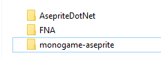

Installation
The purpose of this document is to provide the instructions for installing the MonoGame.Aseprite library for your FNA game project.
Prerequisites
Downloading
To use Monogame.Aseprite with FNA, you will need to clone the source and it's dependency on AsepriteDotNet to reference in your game project. These should both be added as siblings in the directory where you have the FNA cloned too.

You can clone them both with the following commands
https://github.com/AristurtleDev/monogame-aseprite.git
https://github.com/AristurtleDev/AsepriteDotNet.git
Reference In Your Game Project
Once you have cloned both repositories as shown, you just need to add a reference to monogame-aseprite\source\MonoGame.Aseprite\MonoGame.Aseprite.FNA.csproj in your game csproj file. For example
<ItemGroup>
<!-- You should already have the FNA project reference -->
<ProjectReference Include="..\..\FNA\FNA.Core.csproj" />
<!-- Add the MonoGame.Aseprite.FNA.csproj reference as well -->
<ProjectReference Include="..\..\monogame-aseprite\source\MonoGame.Aseprite\MonoGame.Aseprite.FNA.csproj" />
</ItemGroup>
Next Steps
- Load an Aseprite File
- Goes over how to import your Aseprite file so you can get started using it in the game.